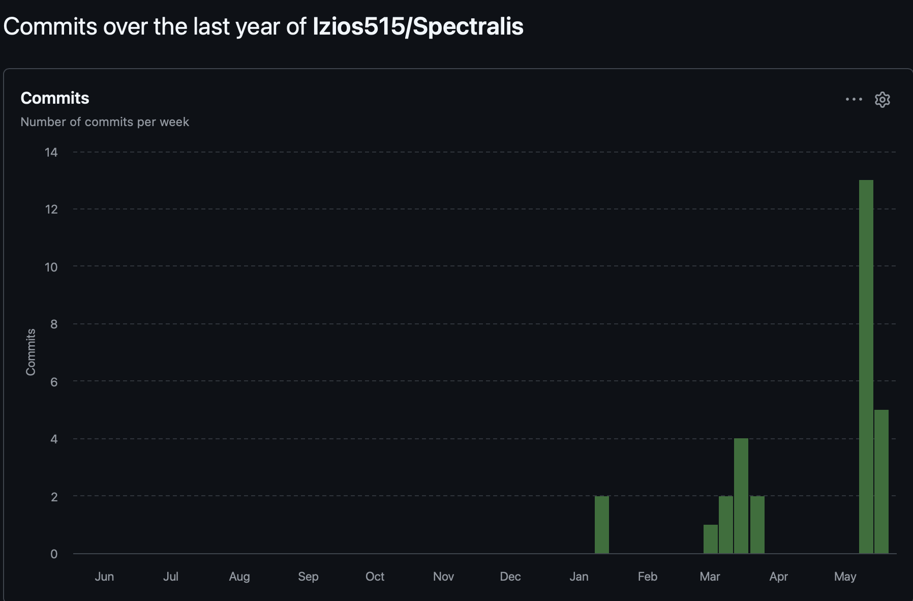

DOS SANTOS Julien
Responsable Interface Graphique & Expérience Utilisateur
Conception et implémentation de l’interface graphique, intégration du spectrogramme, interactions avec les paramètres de synthèse granulaire.
Une équipe de développeurs motivés. Répartition par pôles techniques et preuves de l’avancement réel du projet.
Le projet a été mené de manière incrémentale, avec des points de synchronisation réguliers entre les pôles. Chaque membre dispose d’une responsabilité principale tout en contribuant aux revues de code, aux tests et aux arbitrages techniques.
Responsable Interface Graphique & Expérience Utilisateur
Conception et implémentation de l’interface graphique, intégration du spectrogramme, interactions avec les paramètres de synthèse granulaire.

Responsable Analyse FFT
Mise en place de l’algorithme de FFT, gestion des fenêtres d’analyse et production des données fréquentielles utilisées par la visualisation.
Responsable Synthèse Granulaire
Conception du moteur de synthèse, définition des paramètres contrôlables et intégration avec l’interface graphique.

Responsable I/O Audio & Intégration
Gestion des entrées/sorties audio, pipeline temps réel, intégration des différents modules et optimisation des performances.
Découpage en itérations, définition de jalons clairs — premier rendu, version intégrée, version finale — et suivi par fonctionnalités livrées.
Réunions régulières pour synchroniser les interfaces entre modules, partager les décisions techniques et ajuster le planning selon l’avancement.
Travail en binôme sur les intégrations sensibles, en particulier sur le temps réel, les bugs Linux et les phases de finalisation.
